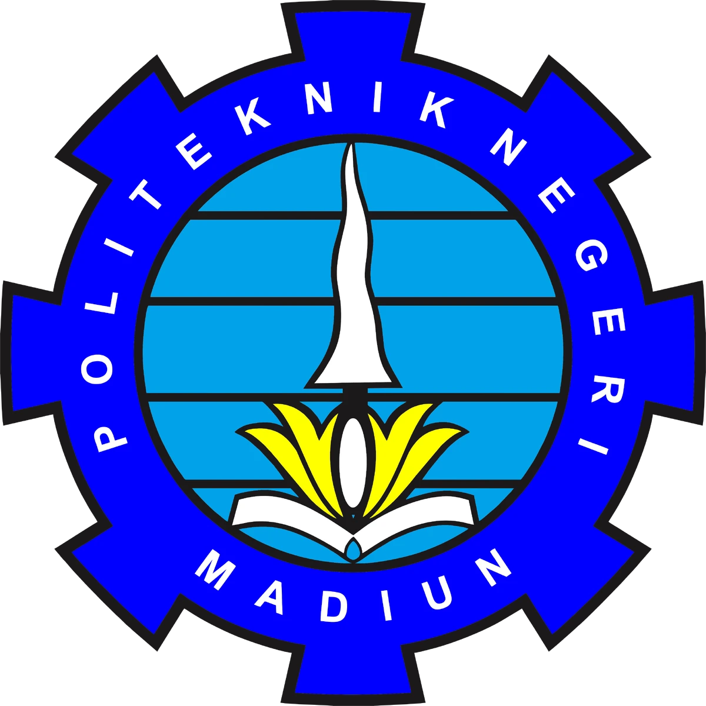

TI
Politeknik Negeri Madiun
Mewujudkan pendidikan tinggi vokasi dalam bidang Teknologi Informasi dan penerapannya yang berkualitas, inovatif dan berdaya saing Nasional.
Ini adalah website CSS saya

Politeknik Negeri Madiun
Mewujudkan pendidikan tinggi vokasi dalam bidang Teknologi Informasi dan penerapannya yang berkualitas, inovatif dan berdaya saing Nasional.